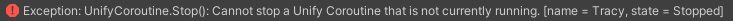

Stopping and Restarting a Unify Coroutine
Unify Coroutines can be stopped and restarted without having to create a new Unify Coroutine instance.
To enable this, keepAlive must be set to true before starting the Unify Coroutine for the first time.
You should stop a Unify Coroutine when you do not want it to continue running, but may want to run it again at some point in the future.
To stop a Unify Coroutine, call the Stop() method on a Unify Coroutine instance. The Stop() method will return true if the Unify Coroutine was stopped successfully, otherwise it will return false.
bool stopped = myUnifyCoroutine.Stop();
Example
This Unify Coroutine counts from 1 to 60, printing the current value to the Unity Console every second.
Here, keepAlive has been set to true to allow restarting and failSilently
has been set to false to allow you to trigger exceptions as described below.
Attach the script below to a GameObject and press:
- S to Start the Unify Coroutine
- X to Stop the Unify Coroutine
using System.Collections;
using Unify.Coroutines;
using UnityEngine;
public class StoppingAndRestarting : MonoBehaviour
{
private UnifyCoroutine myUnifyCoroutine;
void Start()
{
myUnifyCoroutine = new UnifyCoroutine(WaitAndPrint());
myUnifyCoroutine.failSilently = false;
myUnifyCoroutine.keepAlive = true;
}
void Update()
{
if (Input.GetKeyUp(KeyCode.S))
{
print("* Starting Unify Coroutine *");
myUnifyCoroutine.Start();
}
if (Input.GetKeyUp(KeyCode.X))
{
print("* Stopping Unify Coroutine *");
myUnifyCoroutine.Stop();
}
}
IEnumerator WaitAndPrint()
{
for (int i = 1; i <= 60; i++)
{
print("i = " + i);
yield return new WaitForSecondsRealtime(1f);
}
}
}
Exceptions
Exceptions will be thrown under the following circumstances:
- Stopping a Unify Coroutine that is in any state other than Running
- Starting a Unify Coroutine that is in any state other than Stopped or Ready (see keepAlive)
Exceptions will not be thrown if failSilently is true.
Unify will provide information in the exception message to help you find the cause of the error, for example:

This message tell us the Unify Coroutine was already in the Stopped state at the time of the stop request, therefore it cannot be stopped again.